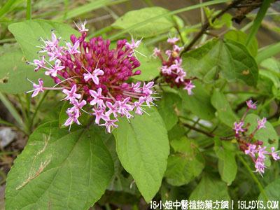

别名：大髻婆。
植物名：臭茉莉。
生长环境：本品为直立、分枝灌木，在村庄旁荒地，旷地上生长，或为栽培。
分布：我国各地都有栽培。
入药部分：根。
采集期：全年有产，秋收为宜。
自采地点：荒地。
性味：性平、味淡。
功能：驱风、活血、壮筋骨。
主治、用量和用法：1、脚气、配伍用；2、手脚无力软痛，配伍用；3、风湿麻痒痛：用干根2至4两，清水煎服，或加鸡肉，猪脚等同煎。
验方1：（治湿脚气方）臭屎茉莉根2两、豆豉羌1两，或加鸡脚，清水四碗，煎成一碗服。
（方解）本方以臭茉莉活血壮筋骨为主，豆豉羌功治湿脚气，配鸡脚以从其类。凡脚肿者于湿者，服之有效。
（方歌）臭茉莉根豆豉羌，祛风胜湿脚气良，鸡脚加来同煎服，消肿舒筋力更强。
验方2：（治风湿软无力痹痛方）臭屎茉莉根1两，千斤拔1两，丢了棒根5钱、过江龙5钱、半枫荷5钱、清水4碗，煎成一碗服。或加鸡脚，猪脚筋等同煎服。
（方解）方中千斤拔活血行气益肝肾，丢了棒根、半枫荷祛风去湿、壮骨强筋，过江龙通血脉，臭屎茉莉功走下焦。合为补肝肾之剂。肝肾两虚而致之风湿脚软，用之有效。
验方3：（治脚气方）臭屎茉莉头4至6两、胡椒30粒、红枣适量，用水4至6碗，煎成一碗，不拘时服。
（方解）臭屎茉莉善祛风活血，长于理脚，加以胡椒温中治寒冷积，红枣旺血，合为扶正驱邪之剂。
（方歌）脚气由来因寒湿，臭屎茉莉求之得，加入胡椒可散寒，红枣旺血服渐吉。
本文解释权归中药大全，本文地址： https://www.daquan.com/post/150.html